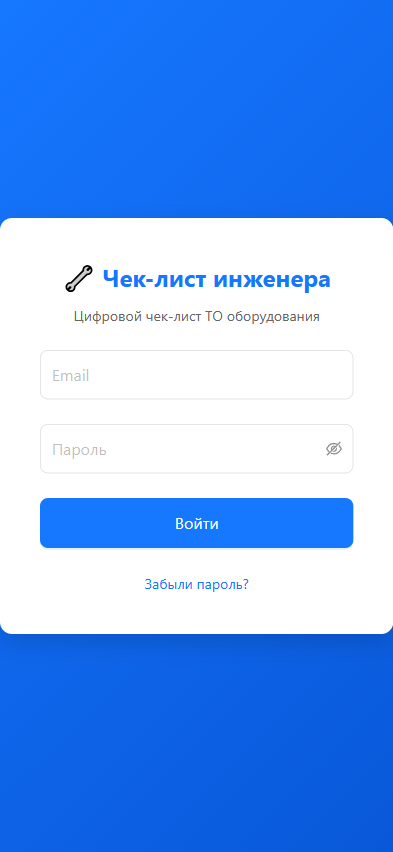

Пользовательская инструкция
Инженер по техническому обслуживанию
1. Введение
Веб-приложение «Цифровой чек-лист инженера» предназначено для автоматизации технического обслуживания оборудования. Вы работаете в роли инженера — создаёте визиты на объектах, заполняете чек-листы контролируемых параметров, делаете фотографии оборудования «до» и «после» работ, формируете и отправляете отчёты заказчикам.
Приложение работает как PWA (Progressive Web App) на смартфоне или планшете и поддерживает работу без интернета.
1.1. Специализации
Каждый инженер имеет одну или несколько специализаций, определяющих набор обслуживаемого оборудования:
| Специализация | Описание | Оборудование |
|---|
| ВиК | Вентиляция и кондиционирование | Сплит-системы, МСС, VRV, тепловые завесы, приточные/вытяжные установки, мобильные кондиционеры |
| ИСЖ | Инженерные сети и здания | РЩ/ГРЩ, счётчики, сети водоснабжения, тепловые сети, ИТП, котлы, шлагбаумы, двери и др. |
| ГПМ | Грузоподъёмные механизмы | Лифты (пассажирские, грузовые, грузопассажирские), подъёмные платформы |
| ДГУ | Дизель-генераторные установки | ДГУ, МКГУ |
| ИБП | Источники бесперебойного питания | ИБП |
Важно: Если у вас не выбрана ни одна специализация, доступ к основному интерфейсу будет заблокирован до её выбора.
Скриншот 1.1 — Экран выбора специализации
[ТРЕБУЕТСЯ СКРИНШОТ]
Экран с пятью чекбоксами специализаций (ВиК, ИСЖ, ГПМ, ДГУ, ИБП) и кнопкой «Сохранить». Показывается при первом входе, если специализация не настроена.
2. Вход в систему
- Откройте приложение в браузере по адресу, указанному администратором.
- Введите email и пароль, выданные при создании учётной записи.
- Нажмите «Войти».
Скриншот 2.1 — Экран входа
[ТРЕБУЕТСЯ СКРИНШОТ]
Форма входа с полями «Email» и «Пароль», кнопкой «Войти» и ссылкой «Забыли пароль?». Логотип приложения в верхней части.
2.1. Первый вход
При первом входе система предложит сменить временный пароль. Введите новый пароль (минимум 8 символов) и подтвердите его.
2.2. Восстановление пароля
Если вы забыли пароль, нажмите «Забыли пароль?» на экране входа. Укажите email — на него придёт ссылка для сброса пароля.
Скриншот 2.2 — Форма восстановления пароля
[ТРЕБУЕТСЯ СКРИНШОТ]
Модальное окно или отдельная страница с полем для ввода email и кнопкой «Отправить ссылку».
3. Личный кабинет и настройка профиля
Перейдите в раздел «Профиль» (иконка пользователя в нижнем меню).
Скриншот 3.1 — Страница профиля
[ТРЕБУЕТСЯ СКРИНШОТ]
Страница профиля с блоками: ФИО, email, роль, специализация (чекбоксы), избранные объекты (список со звёздочками).
3.1. Специализация
В блоке «Специализация» вы можете изменить набор чекбоксов (ВиК, ИСЖ, ГПМ, ДГУ, ИБП). Изменения вступают в силу немедленно — список доступного оборудования в визитах обновится автоматически.
3.2. Избранные объекты
В профиле отображается список избранных объектов (⭐). Нажмите на объект, чтобы перейти к созданию визита.
3.3. Персональные данные
В профиле отображаются ваши ФИО, email и роль. Email изменить самостоятельно нельзя — обратитесь к администратору.
4. Создание визита
Визит — это совокупность работ, выполняемых на одном объекте за одну смену.
4.1. Начало визита
- На главной странице нажмите «Новый визит».
- Заполните обязательные поля:
- Адрес объекта — начните вводить адрес, система предложит варианты из справочника.
- Дата начала — заполняется автоматически текущей датой.
- Время начала — заполняется автоматически текущим временем.
- Сезон — определяется автоматически (01.04–31.10 → «Лето», 01.11–31.03 → «Зима»).
Скриншот 4.1 — Форма создания визита

Форма с полями: «Адрес объекта» (автодополнение), «Дата начала» (календарь), «Время начала» (время), «Сезон» (переключатель Лето/Зима). Кнопка «Сохранить» внизу.
Примечание: При открытии нового визита таблица «Проведённые работы» полностью пустая. Оборудование не подтягивается автоматически — вы добавляете его вручную через кнопку «+ Добавить оборудование».
4.2. Автосохранение
Визит автоматически сохраняется каждые 30 секунд, при переключении между задачами и перед формированием отчёта. В верхней части экрана отображается индикатор: «Сохранено» / «Сохранение...» / «Не сохранено».
4.3. Статусы визита
| Статус | Описание |
|---|
| planned | Запланирован |
| in_progress | В работе (добавлено хотя бы одно оборудование) |
| completed | Заполнены все параметры и фото |
| sent | Отчёт отправлен заказчику |
| corrected_by_tm | Возвращён ТМ на доработку |
5. Добавление оборудования в визит
Нажмите кнопку «+ Добавить оборудование». Для нового визита система сначала сохранит черновик, затем откроет модальное окно.
Скриншот 5.1 — Кнопка добавления оборудования
[ТРЕБУЕТСЯ СКРИНШОТ]
Пустая страница визита с кнопкой «+ Добавить оборудование» в центре или в верхней части. Ниже — пустая таблица «Проведённые работы».
5.1. Вкладка «📍 Уровень помещения»
Для оборудования, привязанного к конкретному помещению (климатическое оборудование: СС, МСС, VRV, тепловые завесы и т.п.).
- Выберите помещение из выпадающего списка (серверная, клиентский зал и т.д.).
- Отметьте галочками нужные единицы оборудования (по умолчанию отмечены все).
- Нажмите «Добавить».
Скриншот 5.2 — Модальное окно добавления оборудования (вкладка «Уровень помещения»)
[ТРЕБУЕТСЯ СКРИНШОТ]
Модальное окно с тремя вкладками вверху. Активна вкладка «Уровень помещения». Выпадающий список выбора помещения, ниже — список оборудования с чекбоксами. Кнопки «Добавить» и «Отмена» внизу.
5.2. Вкладка «🏠 Уровень объекта»
Для оборудования без привязки к помещению (сети, тепловые сети, приборы учёта, РЩ и т.п.).
- Отметьте галочками нужные единицы оборудования.
- Нажмите «Добавить».
Скриншот 5.3 — Вкладка «Уровень объекта»
[ТРЕБУЕТСЯ СКРИНШОТ]
Модальное окно, активна вкладка «Уровень объекта». Список оборудования с чекбоксами (РЩ, счётчики, сети и т.п.). Кнопки «Добавить» и «Отмена».
5.3. Вкладка «➕ Добавить новое»
Для оборудования, которого нет в привязке объекта (вы обнаружили его на объекте впервые).
Скриншот 5.4 — Вкладка «Добавить новое»
[ТРЕБУЕТСЯ СКРИНШОТ]
Форма с полями: «Вид оборудования» (выпадающий список), «Тип помещения», «Марка», «Модель», «Серийный номер», «Комментарий». Чекбокс «Предложить добавить в привязку объекта».
5.4. Таблица «Проведённые работы»
После добавления оборудования в таблице появляются строки:
| Столбец | Описание |
|---|
| Вид оборудования | Тип оборудования и количество единиц |
| Помещение | Где установлено |
| Марка / Модель | Информация об оборудовании |
| Вложения | Статус фото: ⬜ (нет) / 📷 1/2 / 📷 2/2 |
| Статус | «Не начато» / «В работе» / «Выполнено» |
Скриншот 5.5 — Таблица «Проведённые работы»
[ТРЕБУЕТСЯ СКРИНШОТ]
Таблица с добавленными задачами. Для каждой строки: вид оборудования, помещение, марка/модель, иконка вложений (📷), статус. Строки кликабельны — при нажатии открывается страница параметров.
6. Заполнение параметров оборудования
Каждый вид оборудования имеет свою страницу параметров с набором контролируемых полей.
6.1. Общие элементы для всех задач
- Заключение — выберите один из трёх вариантов:
- ✅ «Исправно, замечаний нет»
- ⚠️ «Исправно, есть замечания»
- ❌ «Неисправно»
- Типовые рекомендации — отмечайте галочками рекомендации из справочника.
- Дополнительные рекомендации — свободный текст. Обязательно при выборе «Исправно, есть замечания» или «Неисправно».
- Кнопка «Сбросить» — очищает только текущую задачу.
Скриншот 6.1 — Страница параметров задачи (общий вид)
[ТРЕБУЕТСЯ СКРИНШОТ]
Страница с заголовком (вид оборудования + помещение). Блок контролируемых параметров (переключатели Да/Нет или выпадающие списки). Блок «Заключение» с тремя кнопками-радио. Блок «Типовые рекомендации» с чекбоксами. Поле «Дополнительные рекомендации» (textarea) с иконкой микрофона для голосового ввода. Кнопки «Сохранить и вернуться» и «Сбросить» внизу.
6.2. Примеры страниц параметров
РЩ/ГРЩ (электрощит)
- Состояние контактных соединений, нулевого проводника, заземляющего контура
- Состояние проводов, запирающих устройств, аварийного освещения, УЗО
- 1 фото (ДО)
Прибор учёта электроэнергии
- Модель и номер счётчика (автозаполнение из справочника)
- Трансформатор тока, наличие пломбы, показания
- 1 фото (ДО)
Скриншот 6.2 — Параметры прибора учёта
[ТРЕБУЕТСЯ СКРИНШОТ]
Страница параметров счётчика. Поля «Модель счётчика» и «Номер счётчика» с иконкой 📋 (автозаполнение). Переключатели: «Трансформатор тока» (Да/Нет), «Наличие пломбы» (Да/Нет). Поле «Показания». Блок заключения и рекомендаций. Кнопка «Сделать фото».
Вентиляционная установка (завеса, приточная, вытяжная)
- Режим работы, наличие аварий и ошибок, посторонних шумов
- Состояние воздушного фильтра
- Температура воздуха до/после теплообменника
- 2 фото (ДО и ПОСЛЕ)
Сети водоснабжения
- Повреждения, коррозия, свищи/протечки трубопроводов ХВС/ГВС
- Неисправности крепежей, герметичность арматуры
- Сливные воронки
- 1 фото (ДО)
6.3. Автозаполнение счётчиков
Если оборудование создано из привязки объекта и содержит данные счётчика:
- Модель счётчика = марка + модель из привязки
- Номер счётчика = серийный номер из привязки
Рядом с автозаполненными полями отображается иконка 📋. Поля остаются редактируемыми.
6.4. Сохранение
Нажмите «💾 Сохранить и вернуться в чек-лист». Можно сохранить задачу с частичным заполнением — статус автоматически станет «В работе».
Скриншот 6.3 — Кнопка сохранения
[ТРЕБУЕТСЯ СКРИНШОТ]
Нижняя часть страницы параметров. Кнопка «💾 Сохранить и вернуться в чек-лист» (зелёная, основная). Рядом — кнопка «Сбросить» (серая, вторичная).
7. Групповая задача — климатическое оборудование
7.1. Внутренние блоки (в помещении)
Когда в помещении есть климатическое оборудование (СС, МСС, VRV), формируется одна групповая задача на всё оборудование в помещении.
Общие параметры (один набор на все единицы):
- Температура помещения на уровне 1,2 м от пола
- Заключение
- Типовые рекомендации
- Дополнительные рекомендации
Для каждой единицы индивидуально:
- Статус: ✅ ОК / ⚠️ Не ОК (переключатель)
- Фото ДО и Фото ПОСЛЕ
Скриншот 7.1 — Групповая задача (внутренние блоки)
[ТРЕБУЕТСЯ СКРИНШОТ]
Страница групповой задачи. Вверху — общие параметры (температура, заключение, рекомендации). Ниже — таблица/список единиц оборудования. Для каждой единицы: название, переключатель статуса (ОК/Не ОК), кнопки «Фото ДО» и «Фото ПОСЛЕ» с превью если загружено.
7.2. Наружные блоки
Все наружные блоки кондиционеров на объекте формируют отдельную групповую задачу. Вместо температуры помещения заполняются:
- Работоспособность
- Наличие утечек на трассах
- Наличие посторонних шумов
Скриншот 7.2 — Групповая задача (наружные блоки)
[ТРЕБУЕТСЯ СКРИНШОТ]
Страница групповой задачи для наружных блоков. Общие параметры: работоспособность, утечки, шумы. Список наружных блоков с переключателями статуса и кнопками фото.
7.3. Особенности групповой задачи
- Можно добавить/удалить единицы оборудования прямо из групповой задачи
- Статус определяется автоматически: все единицы имеют статус + фото → «Выполнено»
- Если хотя бы одна единица имеет статус «Не ОК» — поле «Дополнительные рекомендации» обязательно
- Система запрещает загрузку одного и того же фото для разных единиц оборудования
8. Фотофиксация
8.1. Требования к фото
| Оборудование | Кол-во фото |
|---|
| Климатическое (СС, МСС, VRV, завесы, установки) | 2 (ДО и ПОСЛЕ) |
| Остальное (РЩ, счётчики, сети и т.п.) | 1 (ДО) |
8.2. Как сделать фото
- На странице параметров задачи нажмите «📷 Сделать фото» (камера) или «🖼 Выбрать файл» (из галереи).
- Сделайте снимок или выберите изображение.
- Фото отобразится в превью.
Скриншот 8.1 — Кнопки загрузки фото
[ТРЕБУЕТСЯ СКРИНШОТ]
Блок фотофиксации на странице параметров. Две кнопки: «📷 Сделать фото» (основная, зелёная) и «🖼 Выбрать файл» (вторичная, серая). Ниже — превью загруженных фото с подписями (01_до.jpg, 02_после.jpg).
8.3. Предупреждение о персональных данных (152-ФЗ)
При первом фото в клиентских зонах появится предупреждение:
⚠️ ВНИМАНИЕ!
Убедитесь, что в кадр не попали:
• Лица посетителей
• Персональные данные на мониторах
• Банковские карты и документы
[Понятно, сделать фото]
Скриншот 8.2 — Предупреждение 152-ФЗ
[ТРЕБУЕТСЯ СКРИНШОТ]
Модальное окно с жёлтым фоном. Текст предупреждения о персональных данных. Кнопка «Понятно, сделать фото» внизу.
8.4. Маркировка файлов
Фото автоматически именуются по шаблону:
{№}_{тип_оборудования}_{помещение}_{момент}.jpg
Примеры: 01_splitvn_server_before.jpg, 02_rsch_electroshc_after.jpg
9. Завершение визита и отправка отчёта
9.1. Формирование отчёта
Когда все задачи выполнены:
- Нажмите «Завершить визит».
- Система сформирует:
- PDF-отчёт с параметрами, фотографиями и рекомендациями
- ZIP-архив (PDF + маркированные фотографии)
Скриншот 9.1 — Кнопка «Завершить визит»
[ТРЕБУЕТСЯ СКРИНШОТ]
Страница визита со списком задач. Внизу — большая зелёная кнопка «Завершить визит». Рядом может быть кнопка «Сохранить как черновик».
9.2. Отправка по email
После формирования отчёта откроется страница отправки:
- Кому — email заказчика (подставляется из справочника)
- Копия (CC) — опционально
- Тема — формируется автоматически
- Комментарий — опционально
Нажмите «📤 Отправить».
Скриншот 9.2 — Страница отправки отчёта
[ТРЕБУЕТСЯ СКРИНШОТ]
Форма отправки: поле «Кому» (заполнено email заказчика), поле «Копия (CC)», поле «Тема» (заполнено автоматически), textarea «Комментарий». Кнопки «📤 Отправить» (зелёная) и «💾 Скачать» (серая).
9.3. Резервное скачивание
Если email недоступен, нажмите «💾 Скачать» — ZIP-архив сохранится на устройство.
9.4. Структура PDF-отчёта
Отчёт содержит:
- Общие сведения (адрес, дата, время, сезон, инженер)
- Для каждой задачи: местоположение, параметры, фотографии, заключение, рекомендации
- Подпись инженера
Скриншот 9.3 — Пример PDF-отчёта
[ТРЕБУЕТСЯ СКРИНШОТ]
Скриншот открытого PDF-файла. Видна титульная страница с заголовком «АКТЫ ВЫПОЛНЕННЫХ РАБОТ», адрес объекта, дата, время, ФИО инженера. Ниже — первая задача с параметрами и фото.
10. Работа с заявками
Заявки — это задачи из внешней системы, импортированные администратором или ТМ.
10.1. Просмотр назначенных заявок
В разделе «Заявки» вы видите список заявок, назначенных вам.
Скриншот 10.1 — Список заявок

Страница «Заявки». Таблица/список заявок. Для каждой: номер заявки, адрес объекта, вид оборудования, статус (цветной бейдж). Фильтры по статусу вверху.
10.2. Переход к визиту
Нажмите на заявку — система откроет соответствующий визит или предложит создать новый.
10.3. Отказ от заявки
Если вы не можете выполнить заявку:
- Нажмите «Отказаться» рядом с заявкой.
- Укажите причину отказа.
- Уведомление отправится ТМ.
Скриншот 10.2 — Диалог отказа от заявки
[ТРЕБУЕТСЯ СКРИНШОТ]
Модальное окно с полем «Причина отказа» (textarea) и кнопками «Отказаться» (красная) и «Отмена» (серая).
11. Избранные объекты
11.1. Добавление в избранное
На странице объекта или в профиле нажмите ⭐ рядом с адресом. Максимум 20 объектов.
Скриншот 11.1 — Добавление в избранное
[ТРЕБУЕТСЯ СКРИНШОТ]
Карточка объекта или строка в списке с иконкой звезды (⭐) рядом с адресом. Звезда может быть закрашенной (в избранном) или пустой (не в избранном).
11.2. Использование
Избранные объекты отображаются в вашем профиле. Нажмите на объект — откроется форма создания визита с предзаполненным адресом.
11.3. Офлайн-доступ
Список избранных доступен без интернета (синхронизируется с локальным хранилищем).
12. Голосовой ввод
Функция голосового ввода позволяет надиктовать текст в поле «Дополнительные рекомендации» без использования клавиатуры.
12.1. Как использовать
- На странице параметров задачи найдите поле «Дополнительные рекомендации».
- Нажмите на иконку 🎤 микрофона справа от поля.
- Начните говорить — распознанный текст появится в поле.
- Нажмите на микрофон повторно, чтобы остановить запись.
Скриншот 12.1 — Голосовой ввод (кнопка микрофона)
[ТРЕБУЕТСЯ СКРИНШОТ]
Поле «Дополнительные рекомендации» (textarea). Справа от поля — иконка микрофона. Микрофон может быть серым (готов), красным пульсирующим (идёт запись) или перечёркнутым (ошибка).
12.2. Состояния кнопки
| Вид | Значение |
|---|
| Серый микрофон | Готов к записи — нажмите для начала |
| Красный пульсирующий микрофон | Идёт запись — нажмите для остановки |
| Красный перечёркнутый микрофон | Ошибка (нет доступа к микрофону) |
| Полупрозрачный микрофон | Недоступно (нет интернета) |
12.3. Особенности
- Язык распознавания: русский
- Текст добавляется в конец существующего через пробел
- Требует интернет-соединение — без сети кнопка неактивна
- Работает в Chrome/Edge (Android, Desktop) и Safari 14.5+ (iOS)
13. Фонарик
На мобильных устройствах (экран ≤768px) в шапке визита доступна кнопка управления фонариком.
13.1. Использование
- Нажмите кнопку 🔦 — фонарик включится
- Нажмите повторно — выключится
Скриншот 13.1 — Кнопка фонарика в шапке
[ТРЕБУЕТСЯ СКРИНШОТ]
Верхняя часть страницы визита (MobileHeader). Слева — стрелка «Назад» и заголовок. Справа — иконка фонарика (🔦). Кнопка видна только на мобильных.
13.2. Автоматическое выключение
Фонарик выключится автоматически при сворачивании приложения или завершении сессии.
13.3. Уведомления
- При заряде батареи <5% — предупреждение
- При работе фонарика >15 минут — предупреждение о перегреве
13.4. iOS
На iPhone фонарик нельзя включить программно. Появится модальное окно с инструкцией по включению через Пункт управления.
Скриншот 13.2 — Инструкция для iOS
[ТРЕБУЕТСЯ СКРИНШОТ]
Модальное окно на iOS с текстом: «Ваш браузер не поддерживает управление фонариком напрямую. Включите фонарик через Пункт управления: свайпните вниз из правого верхнего угла экрана и нажмите иконку фонарика.»
14. Офлайн-режим
14.1. Что работает без интернета
- Создание и редактирование визитов
- Заполнение параметров задач
- Загрузка фотографий
- Просмотр избранных объектов
- Навигация по приложению
14.2. Автосинхронизация
При восстановлении соединения все накопленные данные и фотографии автоматически отправляются на сервер. Никаких действий от вас не требуется.
Совет: Индикатор подключения отображается в верхней части экрана. Если связь потеряна — продолжайте работу, данные сохранятся и синхронизируются автоматически.
14.3. Что требует интернет
- Отправка отчёта по email
- Голосовой ввод
- Первичная загрузка справочников (адреса, оборудование, рекомендации)
15. Список визитов
На главной странице отображается список ваших визитов с фильтрацией по статусу:
- Все — все визиты
- Запланированные — ещё не начаты
- В работе — есть добавленное оборудование
- Завершённые — все параметры заполнены
- Отправленные — отчёт отправлен заказчику
Скриншот 15.1 — Список визитов с фильтрами

Главная страница. Вверху — переключатель фильтров (Все / Запланированные / В работе / Завершённые / Отправленные). Ниже — список визитов. Для каждого: адрес, дата, время, статус (цветной бейдж), количество задач.
15.1. Действия с визитами
- Открыть — нажмите на визит для продолжения работы
- Удалить — мягкое удаление (визит скрывается, но данные сохраняются)
16. Часто задаваемые вопросы
Можно ли вернуться к уже сохранённой задаче?
Да. Нажмите на строку задачи в чек-листе — откроются ранее введённые данные.
Что будет, если закрыть приложение с несохранёнными данными?
Данные автосохраняются каждые 30 секунд. При попытке закрыть страницу с несохранёнными данными появится предупреждение браузера.
Можно ли добавить оборудование, которого нет в справочнике объекта?
Да, через вкладку «➕ Добавить новое» в модальном окне. Отметьте чекбокс «Предложить добавить в привязку объекта», чтобы администратор закрепил его для будущих визитов.
Что делать, если не работает голосовой ввод?
Убедитесь, что есть интернет-соединение и браузер имеет доступ к микрофону. Голосовой ввод работает в Chrome/Edge и Safari 14.5+.
Как удалить визит?
В списке визитов нажмите на нужный и выберите «Удалить». Визит будет скрыт (мягкое удаление), данные сохранятся.
Кому отправляется отчёт?
Email заказчика подставляется из справочника адресов. Вы можете изменить его перед отправкой или добавить копию (CC).
Версия документа: 1.0
Дата обновления: Июль 2026
Приложение: Цифровой чек-лист инженера v1.0